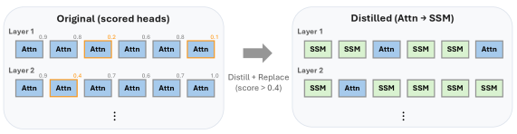

Why it matters왜 중요한가
Hybrid design should be decided by function, not by a fixed layer ratio.
하이브리드 설계는 고정된 레이어 비율이 아니라 '기능'으로 결정돼야 한다.
Existing Transformer-SSM hybrids (Jamba, Zamba, Hymba) sprinkle attention by heuristics — every N-th layer, a fixed 25–50% ratio — and end up paying for far more attention than they need. The key insight here, from the authors' own prior work, is that in-context retrieval is not spread across all heads: it is concentrated in a handful of Gather-and-Aggregate (G&A) heads. So instead of guessing where to place attention, the method measures which heads matter for retrieval and keeps only those. Everything else becomes a cheap recurrent (SSM) head with constant memory.
기존 트랜스포머-SSM 하이브리드(Jamba, Zamba, Hymba)는 휴리스틱으로 어텐션을 배치한다 — N번째 레이어마다, 혹은 25~50% 고정 비율 — 그래서 필요 이상으로 많은 어텐션 비용을 치른다. 이 논문의 핵심 통찰(저자들의 선행 연구)은 문맥 내 검색이 모든 헤드에 퍼져 있지 않다는 것 — 소수의 Gather-and-Aggregate(G&A) 헤드에 집중돼 있다. 따라서 어텐션 위치를 추측하는 대신, 어떤 헤드가 검색에 중요한지 측정해 그것만 남긴다. 나머지는 메모리가 일정한 저렴한 순환(SSM) 헤드로 바뀐다.

By the numbers핵심 숫자
(~10 of 512)유지한 어텐션 헤드
(512개 중 ~10개)
recovered교사 검색 점수
회복률
vs heuristic hybrids휴리스틱 하이브리드 대비
메모리 효율
(d_state 64→8)SSM 상태 축소
(d_state 64→8)
prior distill baselines선행 증류 베이스라인 대비
어텐션 헤드 절감
(vs 5 / 492 SSM heads)남긴 헤드 중 G&A
(SSM은 492개 중 5개)
Results — few heads, leaner state, kept performance결과 — 적은 헤드 · 작은 상태 · 유지된 성능
| Setting | d_state 64 | d_state 8 | Δ |
|---|---|---|---|
| Knowledge-focused | baseline | ≈ baseline | ~0 |
| Retrieval-heavy | baseline | ≈ baseline | ~0 |
| KV-cache memory | 1.0× | ↓ | smaller |
| SSM state memory | 1.0× | 0.125× | −8× |
| Heads kept (attn) | ~10 | ~10 | = |
Numbers reflect the paper's reported trends (Tables 1–4): the 8× state reduction yields "minimal degradation," and the full hybrid recovers >95% retrieval coverage while being 5–6× more memory-efficient than heuristic placement.
수치는 논문이 보고한 경향(Table 1–4)을 반영 — 8배 상태 축소는 "미미한 성능 저하"에 그치고, 전체 하이브리드는 검색 커버리지 95%+를 회복하면서 휴리스틱 배치 대비 메모리 5~6배 효율.
In one diagram한 장의 그림
Idea: a retrieval-guided step before distillation아이디어: 증류 전에 '검색-안내' 단계를 끼운다
Ablate to find G&A heads
On a synthetic KV-retrieval probe, zero out each teacher head one at a time and record the accuracy drop. A large drop = a retrieval-critical Gather-and-Aggregate head. This produces a ranked list — placement becomes empirical, not a fixed pattern.
합성 KV-검색 프로브에서 교사 헤드를 하나씩 0으로 만들고 정확도 하락을 기록한다. 큰 하락 = 검색에 결정적인 Gather-and-Aggregate 헤드. 이렇게 순위 목록이 나오고, 배치는 고정 패턴이 아닌 '실측'이 된다.
Keep top-k, recur the rest (MOHAWK)
Retain the top-k heads with their original Q/K/V; replace all others with DiscreteMamba2 heads. A parameter-free Adapter matches attention-output stats to SSM outputs, then distill (MOHAWK, skipping matrix-orientation since heads are copied verbatim).
상위 k개 헤드는 원래 Q/K/V 그대로 유지하고, 나머지는 모두 DiscreteMamba2 헤드로 교체. 파라미터 없는 Adapter가 어텐션 출력 통계를 SSM 출력에 맞춘 뒤 증류(MOHAWK, 헤드를 그대로 복사하므로 matrix-orientation 단계 생략).
How it works어떻게 작동하나
- Score every head모든 헤드 점수화Run the teacher (Llama-3.2-1B / Qwen2.5-1.5B) on a synthetic KV-retrieval task, ablating each attention head individually and measuring the accuracy drop → a retrieval-importance ranking.교사 모델(Llama-3.2-1B / Qwen2.5-1.5B)을 합성 KV-검색 과제에 돌리며 어텐션 헤드를 하나씩 제거해 정확도 하락을 측정 → 검색-중요도 순위.
- Build a heterogeneous student이질 구조 학생 구성Keep only the top-k heads (≈10–20) as attention; replace the rest with DiscreteMamba2 heads whose state dim matches the original head dim. Layers become pure-SSM or attention+SSM parallel.상위 k개(≈10~20)만 어텐션으로 유지하고, 나머지는 원래 헤드 차원과 일치하는 DiscreteMamba2 헤드로 교체. 레이어는 순수 SSM이거나 어텐션+SSM 병렬이 된다.
- Align with a parameter-free Adapter무파라미터 Adapter로 정렬Within each block, normalize the kept attention-head outputs to the mean/variance of the SSM outputs before concatenation → removes distribution mismatch with zero extra parameters.각 블록에서 남긴 어텐션 헤드 출력을 SSM 출력의 평균/분산에 맞춰 정규화한 뒤 결합 → 추가 파라미터 없이 분포 불일치 제거.
- Distill, then shrink the state증류 후 상태 축소Hidden-state alignment + end-to-end logit distillation (Fineweb-edu, Finemath). With attention now handling retrieval, cut the SSM d_state 8× (64→8) for big memory savings at near-zero accuracy cost.은닉상태 정렬 + 종단간 로짓 증류(Fineweb-edu, Finemath). 어텐션이 검색을 맡으므로 SSM d_state를 8배(64→8) 줄여, 정확도 손실 거의 없이 큰 메모리 절감.
What to take away그래서, 가져갈 것
Function over heuristics. Attention placement is decided by measured retrieval importance, not a fixed every-N-th-layer rule — and that needs >10× fewer heads.
휴리스틱보다 기능. 어텐션 배치를 'N번째 레이어' 규칙이 아니라 측정된 검색 중요도로 결정 — 헤드는 10배 이상 적게 든다.
Big SSM states are a crutch. Once attention does retrieval, an 8× smaller recurrent state barely hurts — suggesting large states mainly compensated for missing retrieval.
큰 SSM 상태는 보조 장치였다. 어텐션이 검색을 맡으면 순환 상태를 8배 줄여도 거의 손해 없음 — 큰 상태는 주로 부족한 검색을 메우던 것이었음을 시사.
Real memory wins. Tiny KV-cache (few heads) + lean SSM state = 5–6× more memory-efficient than heuristic hybrids, with higher prefill/decode throughput.
실제 메모리 이득. 작은 KV-cache(소수 헤드) + 경량 SSM 상태 = 휴리스틱 하이브리드 대비 5~6배 메모리 효율, prefill/decode 처리량도 향상.
Retrieval stays localized. Post-distillation ablation: 11/20 kept heads remain G&A-critical vs only 5/492 SSM heads — the offload genuinely works.
검색은 국소화된 채 유지. 증류 후 제거 실험: 남긴 헤드 20개 중 11개가 여전히 G&A 핵심 vs SSM 492개 중 5개 — 오프로드가 실제로 작동.